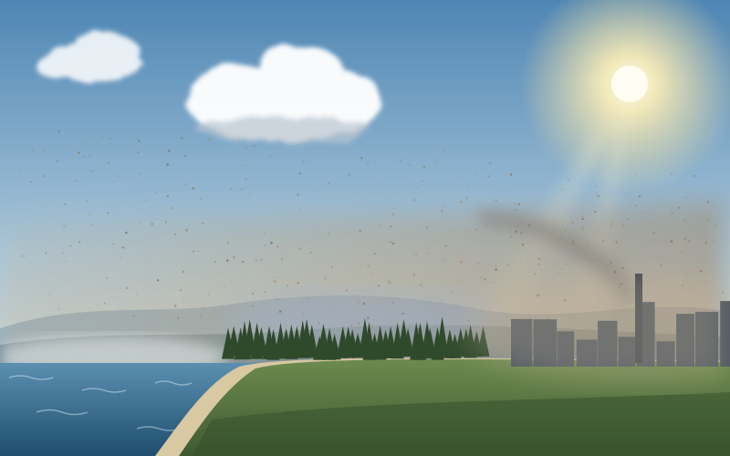
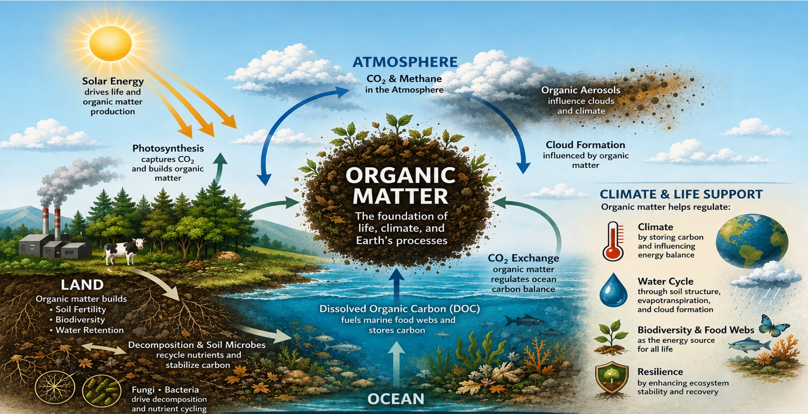

Atmospheric Organic Aerosol Chemistry
Using isotope signatures to constrain oxidant-specific pathways in organic aerosol formation and atmospheric processing.
NSF Postdoctoral Fellow · Harvard University
I use stable isotope geochemistry to investigate the origins, transformations, and fate of organic matter across terrestrial and extraterrestrial environments.
My research combines high-precision isotope measurements, laboratory experiments, and environmental observations to trace the chemical origins, transformation, and fate of organic matter – from its origins in the early Solar System to its contemporary roles in Earth's atmosphere and surface environments.

Research Program
My work uses triple oxygen isotope systematics as a common analytical framework for investigating chemical origins, transformations, and transport across planetary, environmental, and atmospheric systems.


Using isotope signatures to constrain oxidant-specific pathways in organic aerosol formation and atmospheric processing.
Tracing oxidation and transformation pathways that reshape natural organic matter across soils, waters, and environmental interfaces.

Reconstructing the formation, distribution, and alteration of meteoritic organic matter using triple oxygen isotope systematics.